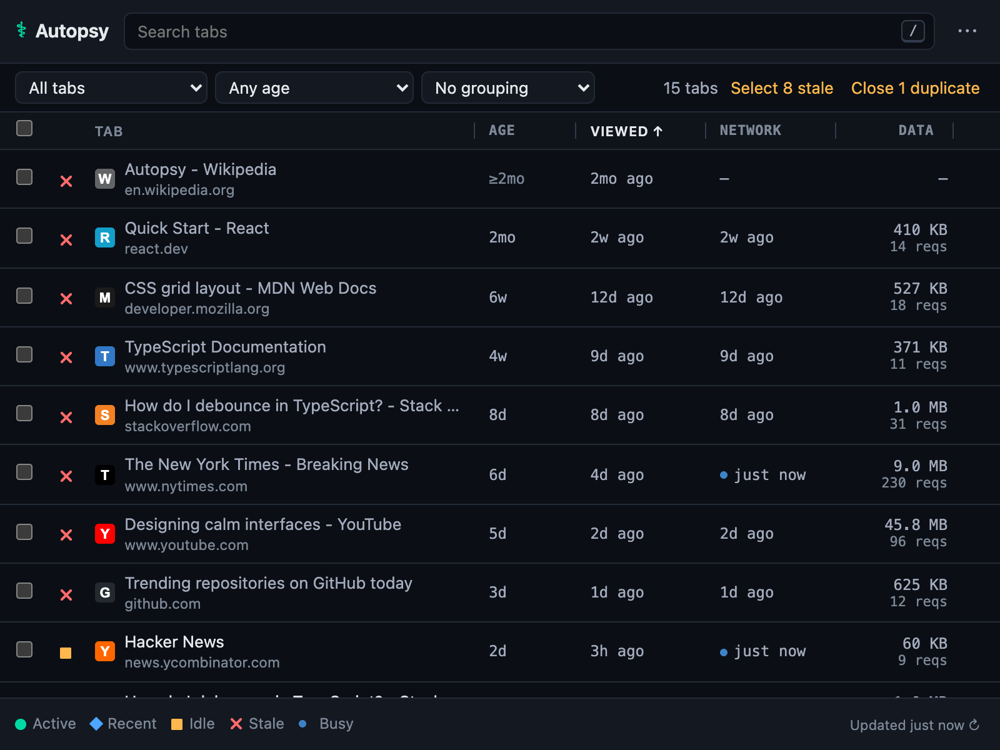
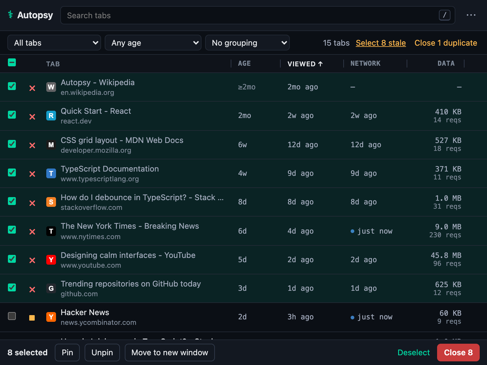
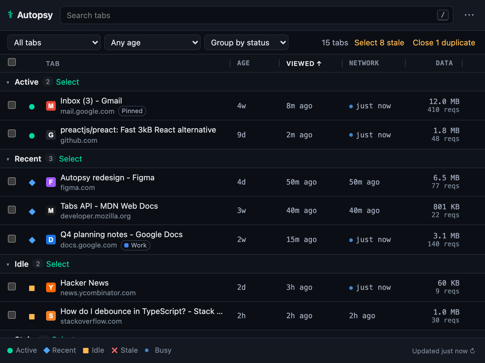
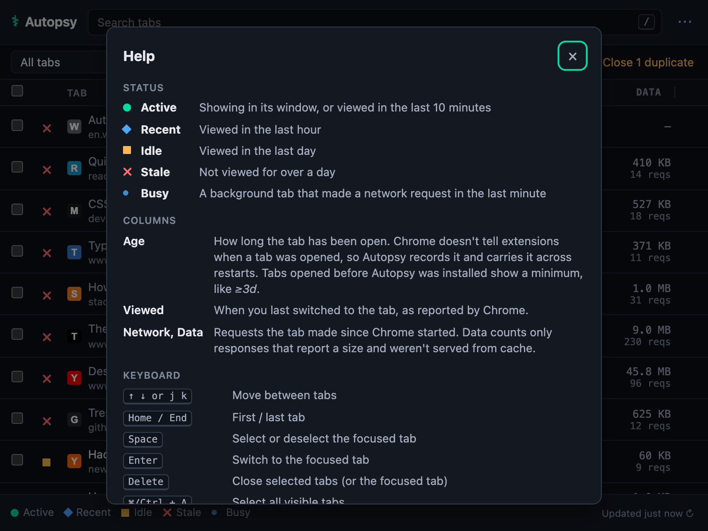
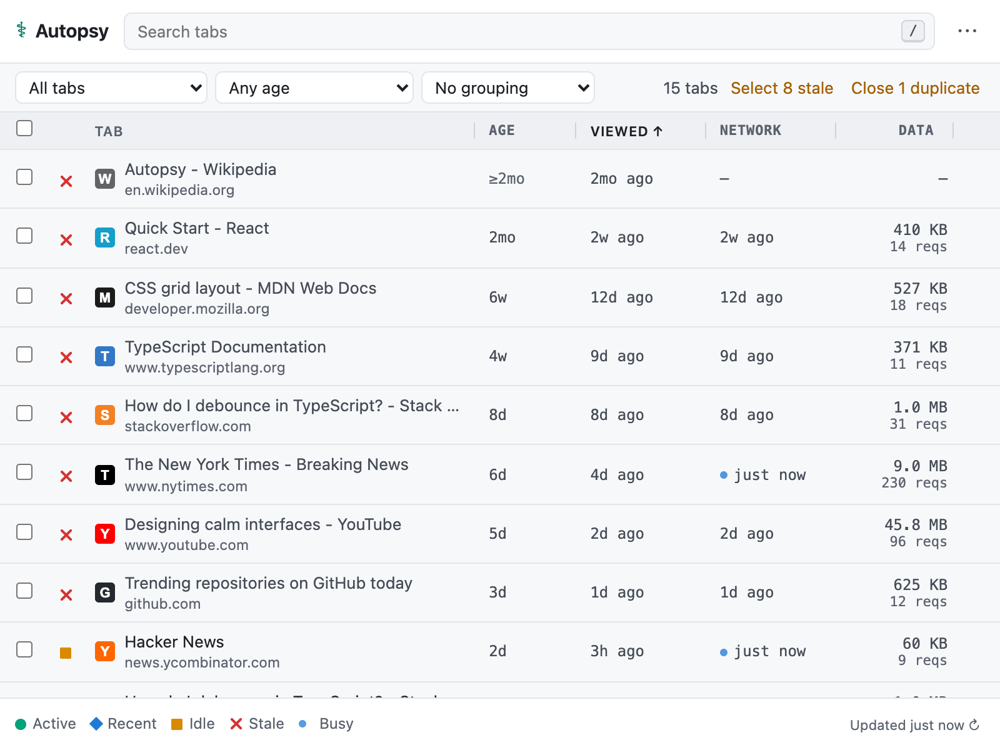
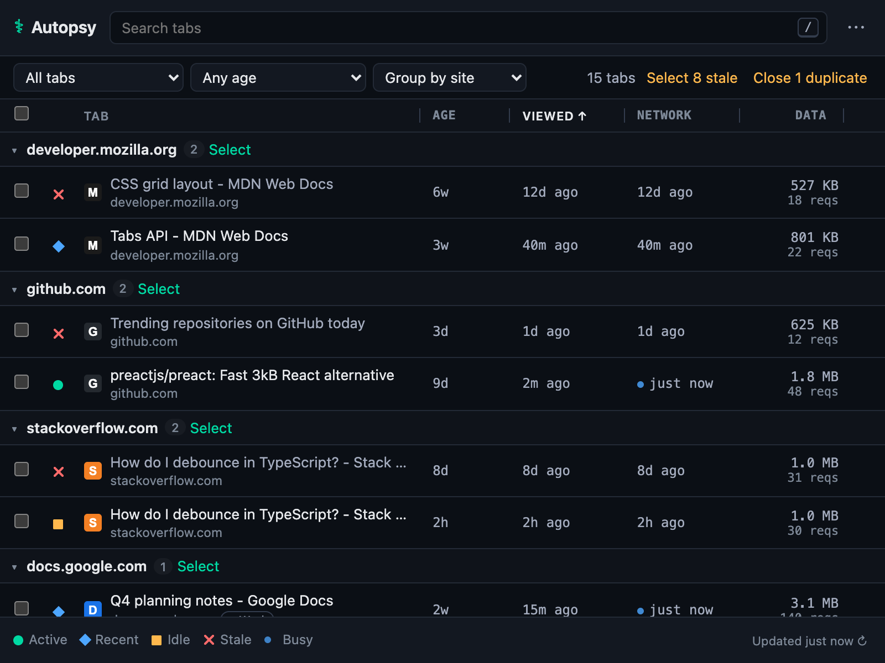
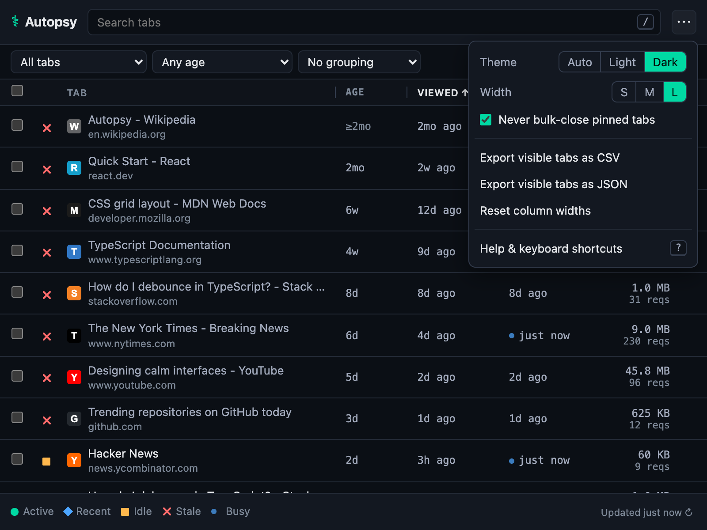

Find the tabs
you forgot.
Autopsy shows how long every tab has been open, when you last looked at it, and which ones are still busy in the background. Then it helps you close the ones you don't need, with undo.
Chrome 121+ · Open source (MIT) · Nothing leaves your browser

Three clicks to a lighter browser
-
1
Look
Open Autopsy and your tabs are listed stalest first. Each one shows its age, when you last viewed it, and its network activity.
-
2
Select
Click Select 8 stale or Close 3 duplicates, or filter by age and status. Pinned tabs and tabs hidden by filters are never included.
-
3
Close, and undo if you need to
Every close can be undone for a few seconds. Undo reopens tabs in their original window and position.


Tab age, done honestly
Chrome doesn't tell extensions when a tab was opened. It only reports when a tab was last switched to. So Autopsy keeps its own record:
- Recorded once. A tab's age starts when it opens and isn't reset when you navigate, even inside apps like Gmail or YouTube.
- Kept across restarts. When Chrome restores your session, every tab and window gets a new ID. Autopsy matches restored tabs to their previous selves by address and position.
- Never made up. Tabs that were open before you installed Autopsy show a minimum, like
≥3d, instead of a guess.
≥ sign means the tab was open before Autopsy started tracking it.Everything else you'd expect
Search and filter
Find any tab by title or address. Show only stale, idle or busy tabs, or tabs older than a day, a week or a month.
Safe bulk actions
Pin, unpin, move to a new window or close many tabs at once. Bulk actions only touch tabs you can see, and they skip pinned tabs.
Keyboard first
Arrow keys or j k to move, Space to select, Delete to close, ⌘Z to undo. Press ? for the full list.
Export
Save the visible tabs as CSV or JSON, with ages, view times and network stats, for your own analysis or as a record.
Light and dark
Follows your system theme, or set it yourself. Status shapes never rely on colour alone, and contrast meets WCAG AA.
Tiny and quiet
About a 40 KB download. No background polling and no remote code. It keeps working when Chrome puts it to sleep.
A closer look




Your tabs stay yours
Autopsy runs entirely in your browser. It has no servers, no accounts, no analytics and no external requests, not even for fonts.
- Stores
- The open time for each open tab, and your preferences, on your device. Network counters are kept in memory and cleared when Chrome restarts.
- Never stores
- Browsing history, page contents, or request and response bodies.
- Never sends
- Anything, anywhere.
Questions
Why does Chrome say Autopsy can "read and change all your data on all websites"?
That's Chrome's standard wording for the webRequest permission with access to all sites. Autopsy uses it only to count each tab's network requests and response sizes, which is how it can tell you a tab is still busy in the background. It never reads page contents, never reads request or response bodies, and never blocks or changes anything. The code that does this is about 30 lines.
How accurate is the tab age?
It's exact for tabs opened while Autopsy is installed, and it survives navigation and browser restarts. Tabs that were already open when you installed Autopsy show a lower bound, like ≥3d. After a restart, if several restored tabs share the same address and were rearranged, their ages can swap.
What counts as "stale"?
A tab you haven't switched to for over a day. The tab currently showing in each window always counts as active, however long it has been on screen.
Will it close something I need?
Only when you ask it to. Bulk closes skip pinned tabs (you can turn this off) and tabs hidden by your filters. Closing more than five tabs asks for confirmation. Every close can be undone for a few seconds with the Undo button or ⌘/Ctrl+Z.
Does it work in Edge, Brave or Arc?
Autopsy is built and tested for Google Chrome 121 or later. Other Chromium browsers that install extensions from the Chrome Web Store may work, but they aren't tested.
Where do I report a bug or ask for a feature?
Open an issue on GitHub, or email info@autopsy.tools. What's coming next is in the roadmap.